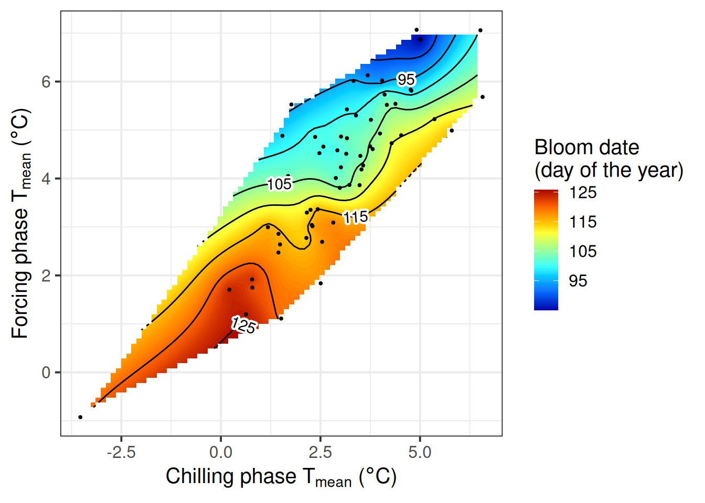

Chapter 26 Evaluating PLS outputs
Learning goals for this lesson
- Understand what we can do with the temperature response phase delineations
- Be able to compute estimates of chill and heat requirements based on the outputs of a PLS analysis
- Be able to make temperature response plots for phenology data
26.1 Chilling and forcing requirements
Despite some trouble in delineating chill and heat response periods, we’ve often been able to identify both dormancy phases. Let’s see how we can make use of this information. We’ll use the example of our ‘Alexander Lucas’ pears again, for which we’ll first draw the PLS response curve.
library(chillR)
Alex_first <- read_tab("data/Alexander_Lucas_bloom_1958_2019.csv") %>%
select(Pheno_year, First_bloom) %>%
mutate(Year = as.numeric(substr(First_bloom, 1, 4)),
Month = as.numeric(substr(First_bloom, 5, 6)),
Day = as.numeric(substr(First_bloom, 7, 8))) %>%
make_JDay() %>%
select(Pheno_year,
JDay) %>%
rename(Year = Pheno_year,
pheno = JDay)
temps <- read_tab("data/TMaxTMin1958-2019_patched.csv")
temps_hourly <- temps %>%
stack_hourly_temps(latitude = 50.6)
daychill <- daily_chill(hourtemps = temps_hourly,
running_mean = 1,
models = list(Chilling_Hours = Chilling_Hours,
Utah_Chill_Units = Utah_Model,
Chill_Portions = Dynamic_Model,
GDH = GDH)
)
plscf <- PLS_chill_force(daily_chill_obj = daychill,
bio_data_frame = Alex_first,
split_month = 6,
chill_models = "Chill_Portions",
heat_models = "GDH",
runn_means = 11)We’ll plot the results using the plot_PLS_chill_force function we produced in PLS regression with agroclimatic metrics.
plot_PLS_chill_force(plscf,
chill_metric = "Chill_Portions",
heat_metric = "GDH",
chill_label = "CP",
heat_label = "GDH",
chill_phase = c(-48, 62),
heat_phase = c(3, 105.5))
I’ve already indicated here what phases I consider relevant for chilling (light blue) and forcing (light red).
If we accept these periods as chilling and forcing phases, the amount of chill or heat accumulated during these phases should be a reasonable approximation of the tree’s agroclimatic needs. We can easily calculate these with the tempResponse function. Of course, chill and heat accumulated during these phases isn’t identical across all years of the dataset. It’s not entirely clear how to arrive at reliable estimates for chill and heat requirements from this set of values, but I’ve found it quite reasonable to use the mean accumulation during the delineated periods as our best estimate and the standard deviation to evaluate the error.
chill_phase <- c(317, 62)
heat_phase <- c(3, 105.5)
chill <- tempResponse(hourtemps = temps_hourly,
Start_JDay = chill_phase[1],
End_JDay = chill_phase[2],
models = list(Chill_Portions = Dynamic_Model),
misstolerance = 10)
heat <- tempResponse(hourtemps = temps_hourly,
Start_JDay = heat_phase[1],
End_JDay = heat_phase[2],
models = list(GDH = GDH))Let’s draw quick histograms for good measure and then quantify the chill and heat requirements, plus their errors.
ggplot(data = chill,
aes(x = Chill_Portions)) +
geom_histogram() +
ggtitle("Chill accumulation during endodormancy (Chill Portions)") +
xlab("Chill accumulation (Chill Portions)") +
ylab("Frequency between 1958 and 2019") +
theme_bw(base_size = 12)
ggplot(data = heat,
aes(x = GDH)) +
geom_histogram() +
ggtitle("Heat accumulation during ecodormancy (GDH)") +
xlab("Heat accumulation (Growing Degree Hours)") +
ylab("Frequency between 1958 and 2019") +
theme_bw(base_size = 12)chill_requirement <- mean(chill$Chill_Portions)
chill_req_error <- sd(chill$Chill_Portions)
heat_requirement <- mean(heat$GDH)
heat_req_error <- sd(heat$GDH)So we find that the chilling requirement (chill_requirement) is about 72.3 Chill Portions, with an estimated error (chill_req_error) of 7.7 CP. The heat requirement (heat_requirement) is about 3415 Growing Degree Hours, with an estimated error (heat_req_error) of 1402 GDH. Compared to other fruit trees, this is a fairly high chilling requirement, while the heat need is quite low.
I should add that we have some ambiguity here regarding the duration of the chilling period especially, and a considerable overlap between the two phases. This may lead to these estimates not being totally reliable here. There have been some discussions about how useful these statistical estimates are. In some cases, they have been pretty close to requirements that were estimated experimentally, while in other cases, there were substantial differences.
Even though some doubts about the accuracy of this method to determine agroclimatic needs remain, it has enabled quick and easy initial estimates of chill and heat requirements, at least for cultivars for which we have long-term bloom data (coupled with temperature recordings).
The first statistical estimates of chill and heat needs with this method were produced for ‘Schneider’s späte Knorpelkirsche’ cherries in Klein-Altendorf (Luedeling et al., 2013b). In that study, we just used a temperature-based PLS analysis, but we later also ran similar analyses with PLS regression using agroclimatic metrics (Luedeling et al., 2013a).
26.2 Response to seasonal temperature
In addition to estimating chill and heat requirements, we can also take a more general look at tree responses to temperature during these delineated phases. While (as I hope you remember) our delineations of chilling and forcing phases were based on the assumption that the agroclimatic models were somewhat accurate, we’ll now take a step back and use raw temperatures again. Now that we have a reasonable estimate of the major temperature response phases, let’s see if we can explain (part of) the trees’ bloom dates just by mean temperature during these periods.
We know that conditions during both the chilling and the forcing phases affect bloom dates, so let’s try to illustrate both of these effects in one figure. We now have two independent variables (mean temperature during chilling and mean temperature during forcing), and we have one dependent variable (bloom date). This means we need three dimensions in our plot.
What chillR provides for us is a bit of a black box, but we’ll reproduce this ourselves later. The function to look at for this is the make_pheno_trend_plot function. The only inputs we need to provide are a data.frame with weather data, a data.frame with phenology data and the start and end days of the temperature response phases we identified. The other inputs are necessary because, like many other functions in the package, chillR is currently set up to produce images rather than just plots in R.
chill_phase <- c(317, 62)
heat_phase <- c(360, 106) # note that the end date here was rounded
# to an integer number, so that a proper
# axis label can be generated.
mpt <- make_pheno_trend_plot(weather_data_frame = temps,
pheno = Alex_first,
Start_JDay_chill = chill_phase[1],
End_JDay_chill = chill_phase[2],
Start_JDay_heat = heat_phase[1],
End_JDay_heat = heat_phase[2],
outpath = "data/",
file_name = "pheno_trend_plot",
plot_title = "Impacts of chilling and forcing temperatures on pear phenology",
image_type = "png",
colorscheme = "normal")
chillR output of phenology trend plot for pears ‘Alexander Lucas’ in Klein-AltendorfWhat we see here is a surface that is interpolated from all bloom dates included in the phenology record, which relates bloom date expectations to temperatures during the chilling phase (x-axis) and the forcing phase (y-axis). The shape of the plotted surface is defined by the array of winter conditions that have been observed since 1958. Apparently, for instance, there have been no years with an average temperature during chilling around -2°C and 4°C during forcing. Hence the plot area remains white in this region.
The array of historically observed conditions is relatively narrow here, with a fairly strong correlation between temperatures during eco- and endodormancy, as indicated by the narrow diagonal shape of the area. Nevertheless, we can already get an idea about the temperature responses. All the blue colors are near the top of the plot, while the red colors are at the bottom. This means that early bloom dates (blue) were mostly associated with a warm forcing phase, while cool conditions during that period were related to late bloom. Evaluating the effect of temperatures during chilling is more difficult here, because of missing data in climatic spaces that would be relevant. We’ll look at other examples later that show a clearer response.
Now let’s see if we can reproduce this figure using ggplot.
We’ll first compute the mean temperatures for the chilling and forcing period. We’ve done something like this before, in the Simple phenology analysis chapter. I’ll reuse code from there to make a function to summarize temperatures for a particular JDay interval
mean_temp_period <- function(
temps,
start_JDay,
end_JDay,
end_season = end_JDay)
{ temps_JDay <- make_JDay(temps) %>%
mutate(Season =Year)
if(start_JDay > end_season)
temps_JDay$Season[which(temps_JDay$JDay >= start_JDay)]<-
temps_JDay$Year[which(temps_JDay$JDay >= start_JDay)]+1
if(start_JDay > end_season)
sub_temps <- subset(temps_JDay,
JDay <= end_JDay | JDay >= start_JDay)
if(start_JDay <= end_JDay)
sub_temps <- subset(temps_JDay,
JDay <= end_JDay & JDay >= start_JDay)
mean_temps <- aggregate(sub_temps[, c("Tmin", "Tmax")],
by = list(sub_temps$Season),
FUN = function(x) mean(x,
na.rm=TRUE))
mean_temps[, "n_days"] <- aggregate(sub_temps[, "Tmin"],
by = list(sub_temps$Season),
FUN = length)[,2]
mean_temps[, "Tmean"] <- (mean_temps$Tmin + mean_temps$Tmax) / 2
mean_temps <- mean_temps[, c(1, 4, 2, 3, 5)]
colnames(mean_temps)[1] <- "End_year"
return(mean_temps)
}
mean_temp_chill <- mean_temp_period(temps = temps,
start_JDay = chill_phase[1],
end_JDay = chill_phase[2],
end_season = 60)
mean_temp_heat <- mean_temp_period(temps = temps,
start_JDay = heat_phase[1],
end_JDay = heat_phase[2],
end_season = 60)Note that we have to be a bit careful here that we don’t assign heat or chill accumulation to the wrong season. This can easily happen when the chilling phase begins and ends before the beginning of January. To prevent this, I added the parameter end_season to the function. If we set this to a JDay of the year that we expect the phenological stage of interest to occur in, we should have no problem with erroneous assignment to seasons.
Now we can combine these two datasets (just the Tmean columns) and merge them with the phenology data. Before that, all incomplete years should be filtered out.
mean_temp_chill <-
mean_temp_chill[which(mean_temp_chill$n_days >=
max(mean_temp_chill$n_days)-1),]
mean_temp_heat <-
mean_temp_heat[which(mean_temp_heat$n_days >=
max(mean_temp_heat$n_days)-1),]
mean_chill <- mean_temp_chill[, c("End_year",
"Tmean")]
colnames(mean_chill)[2] <- "Tmean_chill"
mean_heat <- mean_temp_heat[,c("End_year",
"Tmean")]
colnames(mean_heat)[2] <- "Tmean_heat"
phase_Tmeans <- merge(mean_chill,
mean_heat,
by = "End_year")
pheno <- Alex_first
colnames(pheno)[1] <- "End_year"
Tmeans_pheno <- merge(phase_Tmeans,
pheno,
by = "End_year")| End_year | Tmean_chill | Tmean_heat | pheno |
|---|---|---|---|
| 1959 | 2.924324 | 4.5815534 | 98 |
| 1960 | 3.147206 | 4.5100953 | 101 |
| 1961 | 4.047768 | 6.0223301 | 89 |
| 1962 | 2.541892 | 2.6927184 | 117 |
| 1963 | -3.529730 | -0.9257282 | 118 |
| 1964 | 1.443243 | 2.4723301 | 116 |
Now we want to interpolate a surface from these data. There are various ways to do this. In spatial contexts, the so-called Kriging technique is a widely used interpolation method. Check out the link for more details. chillR uses this technique as implemented in the fields package (function Krig).
library(fields)
k <- Krig(x = as.matrix(
Tmeans_pheno[,
c("Tmean_chill",
"Tmean_heat")]),
Y = Tmeans_pheno$pheno)
pred <- predictSurface(k)
colnames(pred$z) <- pred$y
rownames(pred$z) <- pred$x
library(reshape2)
melted <- melt(pred$z)
library(metR)
library(colorRamps)
colnames(melted) <- c("Tmean_chill",
"Tmean_heat",
"value")
ggplot(melted,
aes(x = Tmean_chill,
y = Tmean_heat,
z = value)) +
geom_contour_fill(bins = 100) +
scale_fill_gradientn(colours = alpha(matlab.like(15)),
name = "Bloom date \n(day of the year)") +
geom_contour(col = "black") +
geom_point(data = Tmeans_pheno,
aes(x = Tmean_chill,
y = Tmean_heat,
z = NULL),
size = 0.7) +
geom_text_contour(stroke = 0.2) +
ylab(expression(paste("Forcing phase ",
T[mean],
" (",
degree,
"C)"))) +
xlab(expression(paste("Chilling phase ",
T[mean],
" (",
degree,
"C)"))) +
theme_bw(base_size = 15)
This now looks remarkably easy, but it took me a while to put all the pieces together. What happened here is that we used the Kriging function and predicted a surface based on the result. The output contained separate elements for the x, y and z values of the surface, which had to be integrated into one data.frame to be useful for ggplot2. The melt function of the reshape2 package came in handy here. To make a proper plot from these data, we needed the colorRamps package for nice colors, and the metR package to place nice labels on the contour lines.
Now that we have the code together to make nice plots, we should make a function from it.
pheno_trend_ggplot <- function(temps,
pheno,
chill_phase,
heat_phase,
phenology_stage = "Bloom")
{
library(fields)
library(reshape2)
library(metR)
library(ggplot2)
library(colorRamps)
# first, a sub-function (function defined within a function) to
# compute the temperature means
mean_temp_period <- function(temps,
start_JDay,
end_JDay,
end_season = end_JDay)
{ temps_JDay <- make_JDay(temps) %>%
mutate(Season = Year)
if(start_JDay > end_season)
temps_JDay$Season[which(temps_JDay$JDay >= start_JDay)] <-
temps_JDay$Year[which(temps_JDay$JDay >= start_JDay)]+1
if(start_JDay > end_season)
sub_temps <- subset(temps_JDay,
JDay <= end_JDay | JDay >= start_JDay)
if(start_JDay <= end_JDay)
sub_temps <- subset(temps_JDay,
JDay <= end_JDay & JDay >= start_JDay)
mean_temps <- aggregate(sub_temps[,
c("Tmin",
"Tmax")],
by = list(sub_temps$Season),
FUN = function(x) mean(x,
na.rm = TRUE))
mean_temps[, "n_days"] <- aggregate(sub_temps[,
"Tmin"],
by = list(sub_temps$Season),
FUN = length)[,2]
mean_temps[,"Tmean"] <- (mean_temps$Tmin + mean_temps$Tmax) / 2
mean_temps <- mean_temps[, c(1, 4, 2, 3, 5)]
colnames(mean_temps)[1] <- "End_year"
return(mean_temps)
}
mean_temp_chill <- mean_temp_period(temps = temps,
start_JDay = chill_phase[1],
end_JDay = chill_phase[2],
end_season = heat_phase[2])
mean_temp_heat <- mean_temp_period(temps = temps,
start_JDay = heat_phase[1],
end_JDay = heat_phase[2],
end_season = heat_phase[2])
mean_temp_chill <-
mean_temp_chill[which(mean_temp_chill$n_days >=
max(mean_temp_chill$n_days)-1),]
mean_temp_heat <-
mean_temp_heat[which(mean_temp_heat$n_days >=
max(mean_temp_heat$n_days)-1),]
mean_chill <- mean_temp_chill[, c("End_year",
"Tmean")]
colnames(mean_chill)[2] <- "Tmean_chill"
mean_heat<-mean_temp_heat[,c("End_year",
"Tmean")]
colnames(mean_heat)[2] <- "Tmean_heat"
phase_Tmeans <- merge(mean_chill,
mean_heat,
by = "End_year")
colnames(pheno) <- c("End_year",
"pheno")
Tmeans_pheno <- merge(phase_Tmeans,
pheno,
by="End_year")
# Kriging interpolation
k <- Krig(x = as.matrix(Tmeans_pheno[,c("Tmean_chill",
"Tmean_heat")]),
Y = Tmeans_pheno$pheno)
pred <- predictSurface(k)
colnames(pred$z) <- pred$y
rownames(pred$z) <- pred$x
melted <- melt(pred$z)
colnames(melted) <- c("Tmean_chill",
"Tmean_heat",
"value")
ggplot(melted,
aes(x = Tmean_chill,
y = Tmean_heat,
z = value)) +
geom_contour_fill(bins = 60) +
scale_fill_gradientn(colours = alpha(matlab.like(15)),
name = paste(phenology_stage,
"date \n(day of the year)")) +
geom_contour(col = "black") +
geom_text_contour(stroke = 0.2) +
geom_point(data = Tmeans_pheno,
aes(x = Tmean_chill,
y = Tmean_heat,
z = NULL),
size = 0.7) +
ylab(expression(paste("Forcing phase ",
T[mean],
" (",
degree,
"C)"))) +
xlab(expression(paste("Chilling phase ",
T[mean],
" (",
degree,
"C)"))) +
theme_bw(base_size = 15)
}
chill_phase <- c(317, 62)
heat_phase <- c(360, 105.5)
pheno_trend_ggplot(temps = temps,
pheno = Alex_first,
chill_phase = chill_phase,
heat_phase = heat_phase,
phenology_stage = "Bloom")Now we’ve automated the whole procedure, so that we never have to bother with the details of the plot production again.
26.3 Applying our functions to California walnuts
Let’s use the functions we’ve produced so far to do a quick analysis of walnuts in California. With the following button, you can download leaf emergence data for the Payne walnut cultivar, observed in Davis, California. Save this in your data directory.
Cali_temps <- read_tab("data/Davis_weather.csv")
Walnut_pheno <- read_tab("data/Davis_Payne_leaf_out.csv") %>%
mutate(Year = as.numeric(substr(Leaf.date,7,8)),
Year = Year+(19+(Year<25))*100,
Month = as.numeric(substr(Leaf.date,4,5)),
Day = as.numeric(substr(Leaf.date,1,2))) %>%
make_JDay() %>%
select(Year, JDay)
colnames(Walnut_pheno) <- c("Year",
"pheno")
Cali_temps_hourly <- stack_hourly_temps(Cali_temps,
latitude = 38.5)
Cali_daychill <- daily_chill(hourtemps = Cali_temps_hourly,
running_mean = 1,
models = list(Chilling_Hours = Chilling_Hours,
Utah_Chill_Units = Utah_Model,
Chill_Portions = Dynamic_Model,
GDH = GDH)
)
plscf <- PLS_chill_force(daily_chill_obj = Cali_daychill,
bio_data_frame = Walnut_pheno,
split_month = 6,
chill_models = "Chill_Portions",
heat_models = "GDH",
runn_means = 11)
plot_PLS_chill_force(plscf,
chill_metric = "Chill_Portions",
heat_metric = "GDH",
chill_label = "CP",
heat_label = "GDH",
chill_phase = c(-56, 5),
heat_phase = c(19, 77))pheno_trend_ggplot(temps = Cali_temps,
pheno = Walnut_pheno,
chill_phase = c(309, 5),
heat_phase = c(19, 77),
phenology_stage = "Leaf emergence")Here we have a more revealing color pattern. The earliest leaf emergence occurred when the chilling phase was cool, and the forcing phase warm. This is indicated by the blue colors in the top left corner of the plot. The bottom right corner, in contrast, looks red, indicating that a warm chilling phase and a cool forcing phase lead to late bloom.
Exercises on evaluating PLS regression results
Please document all results of the following assignments in your learning logbook.
- Reproduce the analysis for the ‘Roter Boskoop’ dataset.
- We’ve looked at data from a number of locations so far. How would you expect this surface plot to look like in Beijing? And how should it look in Tunisia?